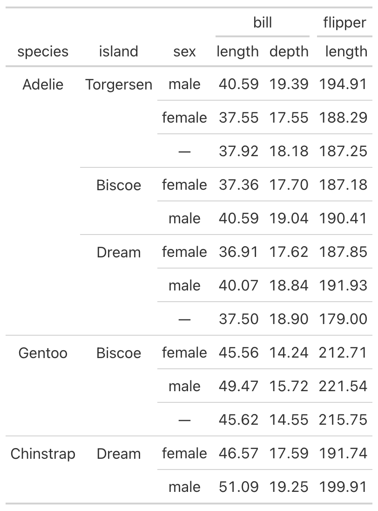

Collapse gt rows in the style of kableExtra
Arguments
- df_g
A gt table data object
- col
The column to collapse
- lookleft
Whether to depend any collapsing on the column one step left
Examples
library(gt)
library(palmerpenguins)
library(tmtyro)
penguins_gt <-
penguins |>
select(-year) |>
summarize(
across(
ends_with("_mm"), mean, na.rm = TRUE),
.by = c(species, island, sex)) |>
gt() |>
fmt_number() |>
tab_spanner(
"bill",
columns = starts_with("bill_")) |>
tab_spanner(
"flipper",
starts_with("flip")) |>
cols_label(
bill_length_mm = "length",
bill_depth_mm = "depth",
flipper_length_mm = "length") |>
sub_missing()
penguins_gt |>
collapse_rows(species) |>
collapse_rows(island)
See also
Other table helpers:
tabulize()